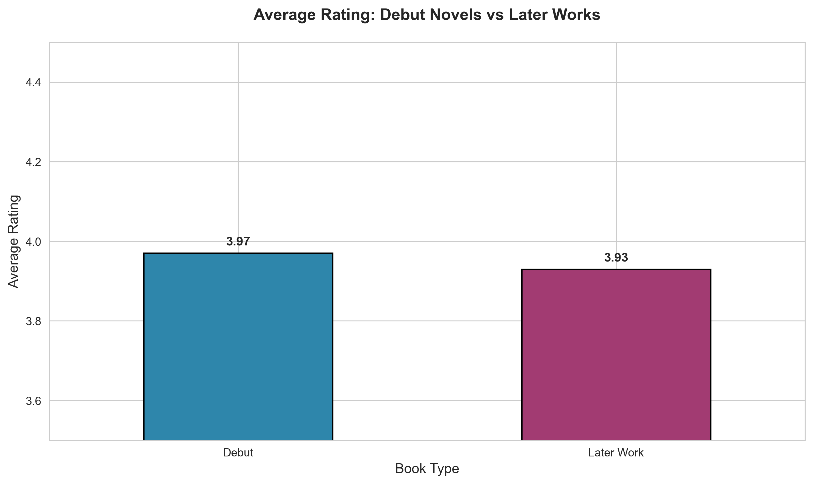
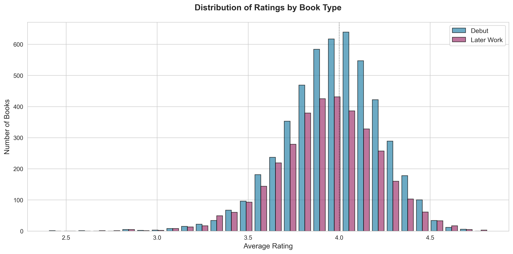
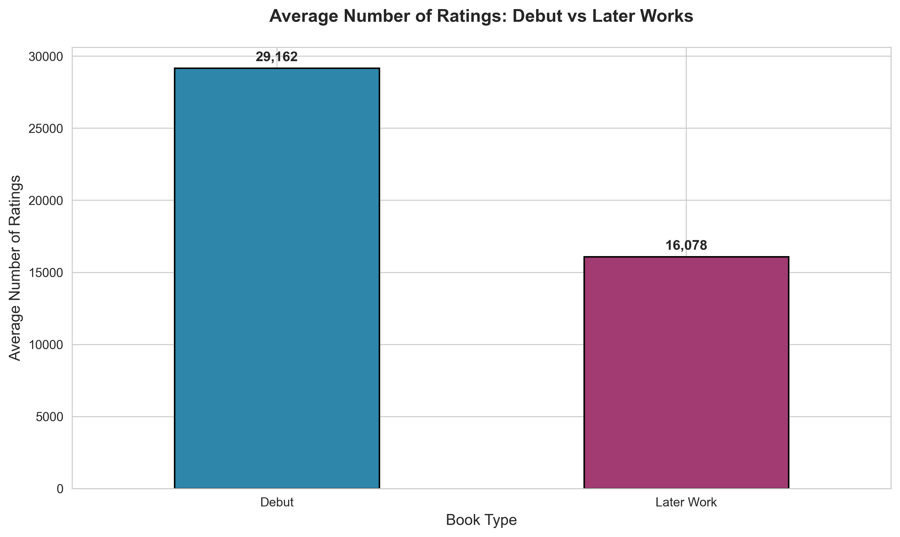
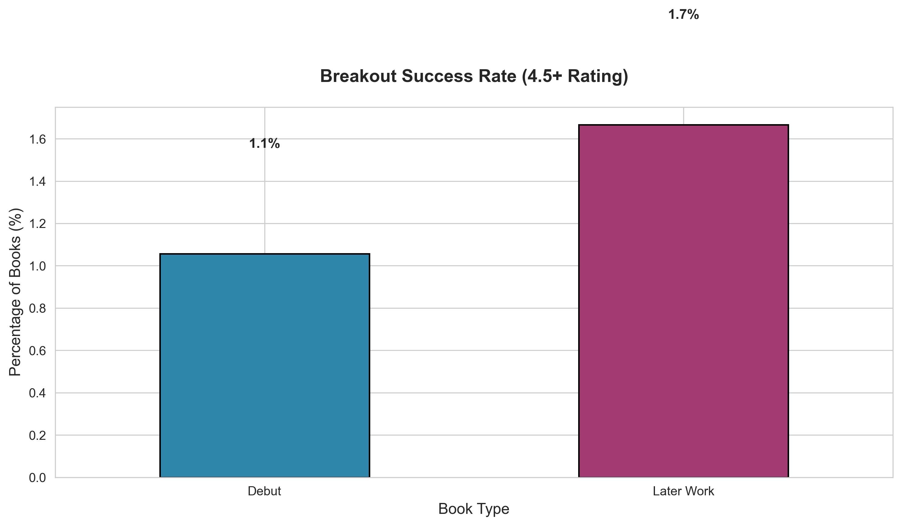

A data-driven analysis of 11,000+ Goodreads books comparing debut novels and later works to inform publishing investment strategies and author career trajectories.
Publishers face a critical investment decision: should they bet on untested debut authors or established writers' new works? This analysis examines rating patterns, reader engagement, and success rates across thousands of books to provide data-driven recommendations.

Debut novels achieve slightly higher average ratings

Similar distribution patterns with slight debut advantage

Debuts generate 81% more reader engagement

Established authors show higher breakout success rates
Data Collection: Used Goodreads Books dataset from Kaggle containing 11,000+ books with comprehensive rating and review data.
Classification Approach: Books were classified as "Debut" (author's most popular/first book in dataset) or "Later Work" based on author's body of work and publication patterns.
Analysis Steps:
Key Metrics Analyzed:
Limitations:
For Publishers:
For Authors:
Investment Framework:
Future Analysis Opportunities:
This analysis provides actionable insights for publishers navigating the debut vs established author investment decision. The data reveals that debuts generate exceptional reader engagement and buzz, making them valuable for building excitement and discovering breakout talent. However, established authors offer reliability and consistency that balances portfolio risk.
The optimal strategy combines both: invest in high-potential debuts for market excitement and brand building, while maintaining a base of established authors for predictable revenue. This balanced approach maximizes both growth potential and financial stability.
Skills Demonstrated: Statistical Analysis, Hypothesis Testing, Data Visualization, Python Programming, Business Strategy Translation